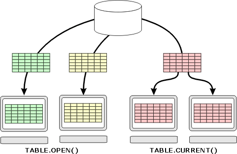

Contrasting TABLE.OPEN() with TABLE.CURRENT()
and TABLE.GET()
TABLE.OPEN() opens a new instance of a table. This new instance has its own record pointer, queries, etc. TABLE.CURRENT() and TABLE.GET(), on the other hand, get a pointer to an already open table. These methods do not open a new instance of that table.
To understand what TABLE.OPEN()does, consider the following scenario: Two users of Alpha Anywhere are viewing the same form. The first user sorts the data by lastname. This has no effect on what the second user sees. The second user can sort the data by company, and filter it to see only customers in New York. This in turn has no effect on what the first user sees. Each user has their own view of the data. Of course, if the first user edits a record or adds a new record to the table, these changes are visible to the second user. In effect, TABLE.OPEN()creates another "user" of the table.

On the other hand, to understand what TABLE.CURRENT()or TABLE.GET()do, consider the following scenario: Two people are sitting at the same computer, viewing a form. If one user sorts or filters the data, the other user will see the same selection of records. They are sharing their view of the data. In effect, TABLE.CURRENT()or TABLE.GET()share a view of a table.
So, for example, if a script on a form uses TABLE.CURRENT()to get a pointer to a table, and then it does a query or moves the record pointer, it will impact the form by changing which records are visible in the form, or changing the record that the form's current record. Of course, the script would have to issue the <FORM>.RESYNCH() command to make sure that the form was synchronized with its underlying table.
On the other hand, if a script on a form uses TABLE.OPEN()to get a pointer to the same table that the form is based on, and the script then does a query or moves the record pointer, it has no effect at all on the records that are visible in the form.